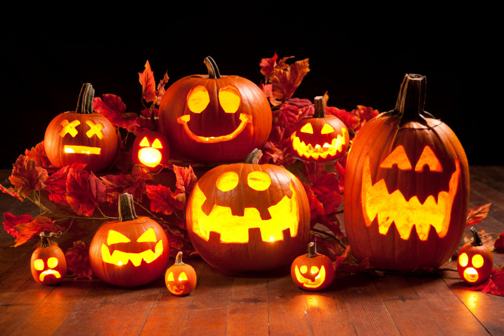

Halloween
Truyền thuyết về lễ hội Halloween
Lễ hội Halloween ngày nay bắt nguồn từ dân tộc Celt, là một dân tộc sống cách đây hơn 2000 năm trên các vùng đất mà bây giờ là Anh quốc, Ireland và miền Bắc nước Pháp. Dân tộc Celt bắt đầu năm mới vào ngày 1 tháng 11 Dương Lịch.Ngày lễ hội này báo hiệu sự bắt đầu của mùa lạnh, của những ngày tối tăm thường được liên kết với sự tàn tạ và sự chết của loài người. Dân tộc Celt tin rằng Samhain cho phép những linh hồn người chết được trở về nhà trên trần gian vào đêm hôm đó.
-
Vào năm 43 (Tây lịch kỷ nguyên), người La Mã chinh phục vùng đất của dân tộc Celt và cai trị khoảng 400 năm . Trong giai đoạn này có hai lễ hội Samhain của dân tộc Celt. Một trong hai lễ đó là FẺALIA được cử hành vào cuối tháng Mười để vinh danh những ngưòi đã chết, lễ thứ hai dành cho Pomona, nữ thần La Mã về cây và quả. Có lẽ vì nữ thần Pomona mà quả táo (apple) đã được kết hợp vào lễ hội Halloween. Tại Anh Quốc, Halloween đôi khi được gọi là Nutcrack Night or Snap Apple Night vì mọi người trong gia đình ngồi quanh lò sưởi kể chuyện và ăn đậu phụng rang hoặc nhai "táo".

-
Vào ngày "Các vong hồn", những người nghèo đi "khất thực cô hồn" (went-a-souling) và họ sẽ được bố thí bánh trái gọi là "soul cakes" (bánh vong hồn) để họ hứa là sẽ cầu nguyện cho "các vong hồn."
Halloween đến Mỹ do những di dân đầu tiên, đa số đến từ Anh Quốc và một số từ các vùng thuộc dân tộc Celt, họ đã đem qua Mỹ khá nhiều phong tục khác nhau. Nhưng vì nhiều lý do, mãi đến thập niên 1800 mới trở thành tục lệ được nhiều người hưởng ứng.
- Gui mail
- Le hoi halloween
- Download hinh anh
Theo truyền thuyết của nước Ái Nhĩ Lan (Ireland) thì từ ngữ "Jack-ó-lanterns" đến từ một người có tên là Jack. Jack là một chàng thiếu niên đã chết nhưng linh hồn không được phép vào Thiên Đàng vì lý do: lúc sống, anh ta vốn là một người tham lam, bủn xỉn, thường cất giấu tiền bạc, keo kiệt không hề bố thí cho ai một chút gì. Thế nhưng anh ta lại cũng không thể vào Địa Ngục vì lúc còn sống anh ta đã từng chơi đùa với ma quỷ, nên quỷ không bắt anh.
Chuyện kể rằng: một hôm có con quỷ đến quấy phá một vùng dân cư, chẳng may bị báo động, người ta đến cầu cứu các vị tu sĩ đem các vật thánh đến "yểm" và "khóa các cửa" ra vào. Thế là con quỷ bị bắt... Jack đã nhận ra đó là con quỷ thường vui đùa với mình và Jack đã tìm cách gỡ vật "yểm ma quỷ" mở đường cho quỷ chạy thoát.
Tro lai Menu